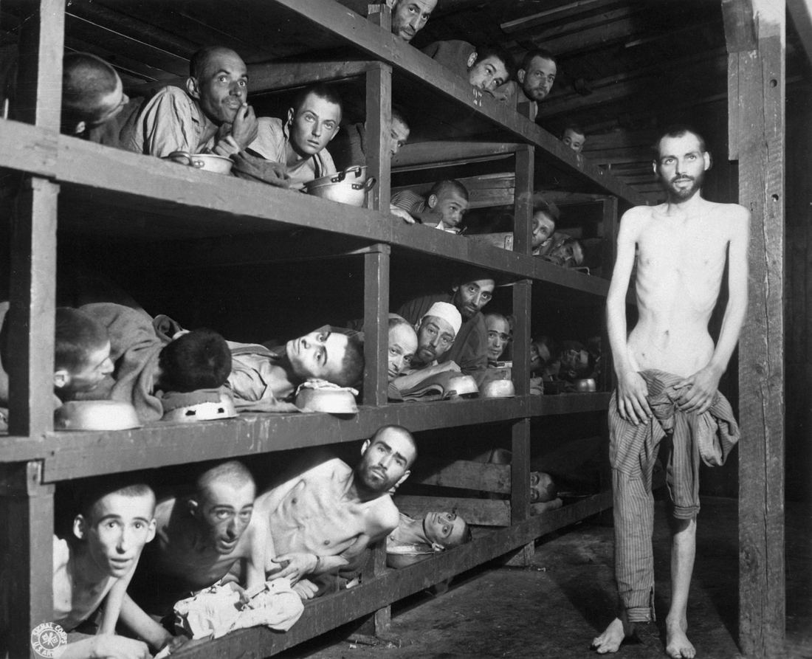

7.8 Mass Atrocities After 1900
- LO-A: Four required AP examples of mass atrocity (CED list): (1) Armenian Genocide in the Ottoman Empire during and after WWI; (2) Holodomor (Ukraine) in the Soviet Union 1920s–30s; (3) Holocaust (Jews in Nazi Germany) during WWII; (4) Cambodia under the Khmer Rouge in the late 1970s; (5) Tutsi genocide in Rwanda in the 1990s. Know ALL five, AP questions may ask you to compare or provide examples. Common factors: extremist ideology + state power + dehumanization: All 20th-century genocides share a pattern: an extremist group gains state power, constructs an ideology that dehumanizes a target group (Jews, Armenians, kulaks, intellectuals, Tutsi), uses state infrastructure (police, military, propaganda) to organize systematic killing, and eliminates the ability to resist or flee. Genocide requires state capacity; it is a crime of governments, not mobs. The Holocaust: the defining case: The Nazi Holocaust killed approximately 6 million Jews (two-thirds of European Jewry) and 5–6 million others (Roma, disabled people, Soviet POWs, political opponents, homosexuals). It was industrialized genocide: railways, bureaucracies, and extermination camps organized killing at industrial scale. The Holocaust produced the 1948 Genocide Convention, the Universal Declaration of Human Rights, and the principle of universal jurisdiction for crimes against humanity. Consequences: international law and the "Never Again" promise: Mass atrocities of the 20th century produced the Nuremberg Trials (1945–46), which established that individuals can be held criminally responsible for crimes against humanity regardless of state authority. The Genocide Convention (1948) defined genocide as a crime under international law. The ICC (International Criminal Court, 2002) provides a permanent court for such crimes. The promise "Never Again" has been repeatedly broken, Rwanda (1994) and Srebrenica (1995) occurred despite it, raising questions about international intervention obligations.
Try each question before revealing the answer.
1. The word "genocide" was invented in 1944 by Polish-Jewish lawyer Raphael Lemkin specifically to describe what was happening to European Jews under Nazi rule. Why did the world need a new word for this phenomenon?
2. The Armenian Genocide (1915–1923) is sometimes disputed by the Turkish government, which calls it "war-era deaths" rather than genocide. What historical criteria determine whether a mass killing constitutes genocide?
3. The Holocaust killed two-thirds of European Jewry. What made the Holocaust uniquely industrialized compared to previous genocides?
4. The Rwandan genocide (1994) killed approximately 500,000–800,000 Tutsi in roughly 100 days, while UN peacekeeping forces were present in the country but ordered not to intervene. What does this reveal about the international community's "Never Again" commitment?
5. The Nuremberg Trials (1945–46) established that individuals can be held criminally responsible for "crimes against humanity" even if they were following orders from legitimate government authority. Why is this principle both important and controversial?
- Explain the various causes and consequences of mass atrocities in the period from 1900 to the present, including the Holocaust, the Armenian Genocide, Holodomor, Cambodian genocide, and Rwandan genocide
Tap a term for its definition.
-
Definition: Acts committed with the intent to destroy, in whole or in part, a national, ethnic, racial, or religious group (UN Genocide Convention, 1948). Significance: The legal definition requires specific intent to destroy a group as such, distinguishing genocide from other mass killings; coined by Raphael Lemkin in 1944 specifically to describe the Holocaust.
-
Definition: The systematic mass murder and deportation of the Armenian population of the Ottoman Empire during WWI, killing approximately 600,000–1.5 million people. Significance: Generally recognized as the first genocide of the 20th century; the Ottoman/Turkish government still disputes the characterization; recognized by most historians and many governments worldwide.
-
Definition: The systematic state-sponsored murder of approximately six million Jews and five to six million others (Roma, disabled people, Soviet POWs, political opponents) by Nazi Germany and its collaborators during WWII. Significance: The most industrialized genocide in history; produced the Genocide Convention (1948), Nuremberg Principles, and the foundational architecture of international human rights law.
-
Definition: The Soviet-engineered famine in Ukraine (1932–33) in which 3–7 million Ukrainians died as a result of forced collectivization, grain quotas, and deliberate withholding of food. Significance: CED illustrative example for mass atrocity in the Soviet period; recognized as genocide by many countries; illustrates how state economic policy can become a weapon of mass killing.
-
Definition: The radical communist regime (Khmer Rouge) under Pol Pot that ruled Cambodia 1975–1979, killing approximately 1.5–2 million people (20–25% of Cambodia's population) through execution, starvation, and forced labor. Significance: CED illustrative example; targeted educated people, ethnic minorities, and anyone connected to the old regime or foreign influence; ended when Vietnam invaded Cambodia in 1979.
-
Definition: The mass slaughter of approximately 500,000–800,000 Tutsi (and moderate Hutu) by Hutu extremists in Rwanda over approximately 100 days in 1994. Significance: CED illustrative example; occurred despite UN peacekeeping presence; revealed the international community's failure to intervene; accelerated development of the "Responsibility to Protect" (R2P) doctrine.
-
Definition: International military tribunal (1945–46) that prosecuted Nazi war criminals for "crimes against peace," war crimes, and "crimes against humanity." Significance: Established the principle that individuals can be held criminally responsible for crimes against humanity regardless of state authority; "following orders" is not a defense; precedent for all subsequent international criminal tribunals.
-
Definition: The rhetorical and propaganda process of portraying a target group as subhuman, as vermin, disease, cockroaches, to reduce inhibitions against killing them. Significance: A common feature of all genocides; Nazi propaganda called Jews "rats"; Rwandan Hutu radio called Tutsi "inyenzi" (cockroaches). Dehumanization is a warning sign that genocide may be imminent.
⚠️ What Is a Mass Atrocity? Why the 20th Century Was Uniquely Terrible
The 20th century produced more mass killings, genocides, ethnic cleansings, and politicides, than any previous century. Historians estimate that government-directed mass violence killed between 100 and 200 million people between 1900 and 2000. This is not because human beings became more evil in the 20th century. It is because the 20th century combined two things that previous centuries lacked in combination: extremist ideologies capable of dehumanizing entire categories of people, and modern state power (bureaucracies, railways, weapons, propaganda) capable of organizing systematic mass killing at industrial scale.
All of the AP CED's required examples share a common structure: an extremist group gains control of a state, constructs an ideology identifying a target group as an enemy to be eliminated, uses state infrastructure to organize systematic killing, and eliminates the victims' ability to resist or flee. The specific ideology differs, racial antisemitism (Holocaust), ethnic/nationalist hatred (Armenians, Rwanda), class-based ideology (Cambodia, Holodomor), but the structural pattern is consistent. Understanding mass atrocities requires understanding both the specific history and the common pattern.
🕌 Armenian Genocide (1915–1923): The First 20th-Century Genocide
The Armenian Genocide occurred within the collapsing Ottoman Empire during WWI. The Young Turk government, which had launched a program of modernization and Turkish nationalism, viewed the Armenian Christian minority as a potential threat: Armenians lived in eastern Anatolia, close to the Russian border, and some Armenian leaders had expressed sympathy for Russia (the Ottoman enemy). The Young Turk leadership used this security pretext to justify what became systematic extermination.
Beginning in April 1915, Ottoman authorities arrested and executed Armenian intellectuals and leaders. Armenian men in the army were disarmed and worked to death or shot. Armenian women, children, and the elderly were forced on death marches into the Syrian desert without food or water. Massacres occurred throughout Anatolia. The exact death toll is disputed, estimates range from 600,000 to 1.5 million killed, out of a pre-war Armenian population of approximately 2 million. The genocide effectively ended the centuries-old Armenian presence in Anatolia. The surviving Armenian diaspora settled in Lebanon, Syria, France, the United States, and Russia, communities that persist today.
☭ Holodomor (1932–33): Famine as a Weapon
The Holodomor ("death by starvation") refers to the famine that killed an estimated 3–7 million Ukrainians between 1932 and 1933, caused by Soviet policies under Stalin. As discussed in Topic 7.4, Stalin's forced collectivization of Ukrainian agriculture, combined with unrealistic grain quotas, a blacklisting system that prevented designated villages from receiving food, and a passport system that prevented peasants from leaving famine-stricken areas, created the conditions for mass starvation.
Whether the Holodomor constitutes genocide in the legal sense, requiring specific intent to destroy Ukrainians as a group, is debated among historians. Many scholars and governments (including Ukraine, Canada, and others) recognize it as genocide; others classify it as a crime against humanity or politicide (killing based on political class, in this case "kulaks" and Ukrainian nationalist communities). What is not disputed: the Soviet state's policies caused millions of Ukrainians to die, and evidence suggests that Soviet officials knew the policies were causing mass death and continued them anyway, in some cases accelerating grain extraction.
✡️ The Holocaust: Industrialized Genocide
The Holocaust was the systematic, state-sponsored murder of approximately six million Jews, roughly two-thirds of European Jewry, by Nazi Germany and its collaborators between 1941 and 1945. It also killed approximately five to six million others: Roma (Sinti), disabled people, Soviet prisoners of war, political opponents, Jehovah's Witnesses, and homosexuals.
The Holocaust was the product of Nazi racial ideology combined with modern industrial state capacity. It proceeded in stages:
- 1933–1939: Legal persecution. The Nuremberg Laws (1935) stripped Jews of German citizenship and prohibited marriage between Jews and non-Jews. Jewish-owned businesses were boycotted, then seized. Jews were progressively excluded from public life, professions, and education.
- 1938–1941: Violence and ghettoization. Kristallnacht (November 1938), a nationwide pogrom destroying Jewish businesses, synagogues, and homes, killed hundreds and sent 30,000 to concentration camps. As Germany conquered Poland and the Soviet Union, Jews were concentrated in overcrowded urban ghettos.
- 1941–1945: "Final Solution", systematic extermination. The Wannsee Conference (January 1942) coordinated the systematic murder of all European Jews. Mobile killing units (Einsatzgruppen) had already killed over 1.5 million Jews in the Soviet Union by shooting. The extermination camps, Auschwitz-Birkenau, Treblinka, Sobibor, Belzec, Majdanek, Chelmno, used industrial-scale gas chambers, processing thousands per day. In total, approximately six million Jews were murdered.
The Holocaust Memorial in Berlin (2005) contains 2,711 concrete pillars, one for each day of WWII. Its disorienting labyrinthine design is intended to evoke the isolation and disorientation experienced by Holocaust victims. Mass atrocities must be remembered specifically to prevent their recurrence. AI-generated illustration (Google Gemini, 2025), commercially licensed.

Survivors at Buchenwald concentration camp, liberated by US forces, April 16, 1945. Photo: Pvt. H. Miller, US Army Signal Corps. Public domain, Wikimedia Commons.
🇰🇭 Cambodia (1975–1979): Genocide by Ideology
The Khmer Rouge, a radical communist movement led by Pol Pot, seized power in Cambodia in April 1975 and immediately began implementing an extreme agrarian utopian program. They evacuated all cities (Phnom Penh, a city of 2 million, was emptied in days), abolished money, schools, and religion, and forced the entire population into agricultural collectives. Anyone associated with the old government, the educated class ("intellectuals" were defined as anyone wearing glasses), or foreign influence was targeted for execution.
The results were catastrophic: approximately 1.5–2 million people died, roughly 20–25% of Cambodia's pre-1975 population, through execution, starvation, forced labor, and disease. The Khmer Rouge additionally targeted ethnic Vietnamese, Chinese, and Muslim Cham minorities specifically for ethnic destruction, which meets the Genocide Convention's definition. The regime fell when Vietnam invaded in December 1978 (January 1979), driven in part by border attacks. Pol Pot fled and was never extradited for trial; he died in 1998 under house arrest by his own former comrades. The Extraordinary Chambers in the Courts of Cambodia (established 2006) has convicted several Khmer Rouge leaders, but accountability came decades late.
🇷🇼 Rwanda (1994): "Never Again" Failed
The Rwandan genocide took place in approximately 100 days between April and July 1994, killing an estimated 500,000–800,000 Tutsi (and moderate Hutu). It was organized by Hutu extremists within the Rwandan government using radio propaganda, political networks, and local militia (interahamwe). RTLM radio, "Radio Mille Collines" ("Radio of a Thousand Hills"), broadcast the names of Tutsi targets and called on Hutu listeners to "cut down the tall trees" (a euphemism for killing Tutsi). The killings were largely carried out with machetes by ordinary civilians, organized through local administrative networks.
The international response was a catastrophic failure. The UN Mission to Rwanda (UNAMIR) had approximately 2,500 peacekeepers on the ground but was under orders not to use force except in self-defense. General Roméo Dallaire, the UNAMIR commander, sent detailed warnings to UN headquarters about the impending genocide and requested authority to act. He was denied. The U.S. and other governments refused to officially use the word "genocide" because the Genocide Convention arguably obligated intervention they were unwilling to undertake. The genocide ended when the Rwandan Patriotic Front (a Tutsi rebel army based in Uganda) defeated the Hutu extremist government and took control of Rwanda. The international community's failure in Rwanda directly contributed to the development of the "Responsibility to Protect" (R2P) doctrine (2005), which asserts that states have a responsibility to protect their populations from genocide and that the international community has a responsibility to intervene when states fail to do so.
⚖️ Consequences: International Law, Accountability, and the Limits of "Never Again"
The mass atrocities of the 20th century produced a significant international legal response:
- Nuremberg Trials (1945–46): Established individual criminal responsibility for crimes against peace, war crimes, and crimes against humanity; "following orders" is not a defense.
- Genocide Convention (1948): The first international treaty specifically prohibiting genocide and obligating signatories to prevent and punish it.
- Universal Declaration of Human Rights (1948): Established the framework of universal human rights owed to every person regardless of nationality or government.
- International Criminal Tribunal for Yugoslavia (1993) and Rwanda (1994): Ad hoc tribunals established by the UN Security Council to prosecute genocide and crimes against humanity in those specific conflicts.
- International Criminal Court (ICC, 2002): Permanent international court with jurisdiction over genocide, crimes against humanity, and war crimes.
- Responsibility to Protect (R2P, 2005): International norm asserting that states have a responsibility to protect their populations from genocide, and the international community has a responsibility to intervene when they fail.
Despite this legal architecture, mass atrocities have continued: Srebrenica (1995), Darfur (2003–ongoing), Myanmar (2016–ongoing), and others have occurred in the post-ICC world. The gap between the legal commitment to "Never Again" and the political will to act remains one of the defining failures of the contemporary international order.
These videos will help you review Mass Atrocities After 1900 and solidify key concepts before your exam.
- Modern populations are more susceptible to ideological extremism than pre-industrial populations
- International law in the modern period has failed to establish clear prohibitions on mass killing
- Modern states possess bureaucratic organization, transportation infrastructure, and weapons technology that enable systematic killing at industrial scale
- Modern media allows extremist groups to spread hatred more effectively than pre-modern oral traditions
- the fact that it killed more people than any of the other listed atrocities
- the scale of agricultural failure, which was entirely the result of drought and climate rather than policy decisions
- the Soviet Union's official acknowledgment that the famine constituted genocide
- evidence that Soviet policies deliberately targeted Ukrainians and continued grain extraction during famine, causing mass starvation
- the degree of ideological hatred motivating the perpetrators
- the systematic application of modern industrial methods and state organization to mass killing, enabling a scale and efficiency of murder not previously possible
- the fact that the Holocaust targeted a religious rather than ethnic minority
- international recognition, the Holocaust was recognized as genocide while the Armenian Genocide was not
- genocide prevention requires not only international legal frameworks but political will by major powers to authorize intervention
- UN peacekeeping operations are structurally incapable of preventing any form of mass violence
- the Rwandan government's military superiority made international intervention logistically impossible
- the Genocide Convention (1948) was poorly designed and ineffective in all subsequent applications
- the immediate end of all state-directed mass violence following WWII
- the requirement that all future military conflicts be subject to UN Security Council approval
- the creation of the International Criminal Court and a framework of universal jurisdiction for the most serious human rights crimes
- the dissolution of the German state and permanent Allied military occupation